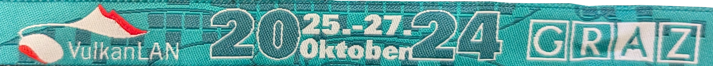

Once upon a modern day in the bustling heart of Central Europe, five daring friends from various corners of Slovakia decided to band together and embark on a digital crusade. Their clan name? "Nasersi," a choice that raised eyebrows and prompted chuckles across the online realms. For those not in the know, "Nasersi" translates to "shit yourself" in English, a moniker so bold, so audacious, it was either the product of genius or a total lack of it. These lads were novices in the gaming world, armed with more enthusiasm than skill, and more ambition than strategy.
Yet, they were determined to make their mark at VulkanLAN, the legendary Austrian LAN party known as the battleground of the elite.
